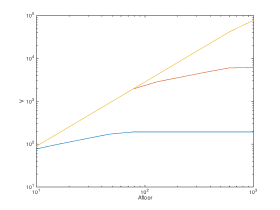

% Boyd, Kim, Vandenberghe, and Hassibi, "A Tutorial on Geometric Programming" % Written for CVX by Almir Mutapcic 02/08/06 % (a figure is generated) % % Maximizes volume of a box-shaped structure which has constraints % on its total wall area, its total floor area, and which has lower % and upper bounds on the aspect ratios. This leads to a GP: % % maximize h*w*d % s.t. 2(h*w + h*d) <= Awall, w*d <= Afloor % alpha <= h/w <= beta % gamma <= d/w <= delta % % where variables are the box height h, width w, and depth d. % problem constants alpha = 0.5; beta = 2; gamma = 0.5; delta = 2; % varying parameters for an optimal trade-off curve N = 10; Afloor = logspace(1,3,N); Awall = [100 1000 10000]; opt_volumes = zeros(length(Awall),N); disp('Computing optimal box volume for:') % setup various GP problems with varying parameters for k = 1:length(Awall) Awall_k = Awall(k); fprintf( 'Awall = %d:\n', Awall(k) ); for n = 1:N % resolve the problem with varying parameters Afloor_n = Afloor(n); fprintf( ' Afloor = %7.2f: ', Afloor(n) ); cvx_begin gp quiet variables h w d % objective function is the box volume maximize( h*w*d ) subject to 2*(h*w + h*d) <= Awall_k; w*d <= Afloor_n; alpha <= h/w <= beta; gamma <= d/w <= delta; cvx_end fprintf( 'max_volume = %3.2f\n', cvx_optval ); opt_volumes(k,n) = cvx_optval; end end % plot the tradeoff curve figure, clf loglog(Afloor,opt_volumes(1,:), Afloor,opt_volumes(2,:), Afloor,opt_volumes(3,:)); xlabel('Afloor'); ylabel('V');
Computing optimal box volume for:
Awall = 100:
Afloor = 10.00: max_volume = 77.46
Afloor = 16.68: max_volume = 102.11
Afloor = 27.83: max_volume = 131.87
Afloor = 46.42: max_volume = 170.32
Afloor = 77.43: max_volume = 192.45
Afloor = 129.15: max_volume = 192.45
Afloor = 215.44: max_volume = 192.45
Afloor = 359.38: max_volume = 192.45
Afloor = 599.48: max_volume = 192.45
Afloor = 1000.00: max_volume = 192.45
Awall = 1000:
Afloor = 10.00: max_volume = 89.44
Afloor = 16.68: max_volume = 192.70
Afloor = 27.83: max_volume = 415.16
Afloor = 46.42: max_volume = 894.43
Afloor = 77.43: max_volume = 1926.98
Afloor = 129.15: max_volume = 2841.16
Afloor = 215.44: max_volume = 3669.50
Afloor = 359.38: max_volume = 4739.34
Afloor = 599.48: max_volume = 5998.71
Afloor = 1000.00: max_volume = 6085.81
Awall = 10000:
Afloor = 10.00: max_volume = 89.44
Afloor = 16.68: max_volume = 192.70
Afloor = 27.83: max_volume = 415.16
Afloor = 46.42: max_volume = 894.43
Afloor = 77.43: max_volume = 1926.98
Afloor = 129.15: max_volume = 4151.56
Afloor = 215.44: max_volume = 8944.27
Afloor = 359.38: max_volume = 19269.85
Afloor = 599.48: max_volume = 41515.63
Afloor = 1000.00: max_volume = 77459.67
